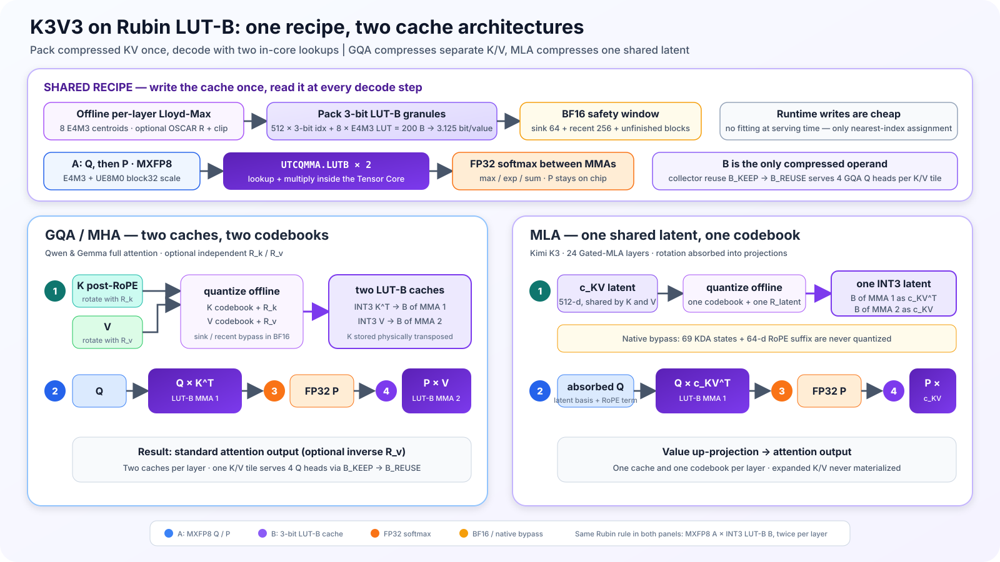

TL;DR
- What does Rubin provide? 22 TB/s of HBM4, plus a LUT-B Tensor Core that decompresses 3-bit indices into eight E4M3 values inside the matrix multiply.
- Where does it help? Static 3-bit weights are the natural B operand, but dynamic
KᵀandVare legal too. Q and post-softmax P stay MXFP8 in A, so Rubin can target both model-weight bandwidth and the repeatedly reread KV-cache bottleneck. - Why not naive INT3? Outliers destroy it: Qwen3-4B's 8K PPL jumps from 9.468 to 1504. Offline Lloyd–Max[1][2] codebooks — plus OSCAR[3] rotation and a BF16 sink/recent window — bring it back to ~10.4.
- Why use 10M? Under a Kimi K3 MLA TP8 thought experiment, perfectly sharded 1.56-TB weights leave 93 GB per 288-GB Rubin. A 10M-token K3V3 latent plus native RoPE uses 78.7 GB, leaving 14.3 GB per GPU for runtime. The zero-reserve mathematical ceiling is 11.81M; the current checkpoint itself is still a 1M-context model.
1Introduction: What Exactly Changed with Vera Rubin?
1.1 From a “faster GPU” to an agentic inference platform
NVIDIA's official narrative for Rubin is agentic AI: longer contexts, more reasoning steps, greater decode interactivity, and rack-scale orchestration. Published specifications for a single Rubin GPU include 224 SMs, 896 Tensor Cores, 288 GB of HBM4, and 22 TB/s of HBM bandwidth; Vera Rubin NVL72 connects 72 GPUs into a single NVLink 6 scale-up domain.
| Public spec | 1× Rubin GPU | Vera Rubin NVL72 |
|---|---|---|
| GPU count | 1 | 72 |
| HBM4 capacity | 288 GB | 20.7 TB |
| HBM bandwidth | 22 TB/s | 1,580 TB/s |
| NVFP4 inference | 50 PFLOP/s | 3,600 PFLOP/s |
| FP8/FP6 published peak | 17.5 PFLOP/s | 1,260 PFLOP/s |
| NVLink bandwidth | 3.6 TB/s | 260 TB/s switch bandwidth |
1.2 Why do we care so much about the KV cache?
The community often summarizes inference with one line: prefill is compute-bound, decode is bandwidth-bound. The Medium article on disaggregated inference uses this framework to explain why HBM, KV movement, and prefill/decode separation are becoming increasingly important.
In long-context decoding, every generated token requires the historical K/V to be read again. The smaller the model, the longer the context, and the larger the batch, the more likely KV traffic is to become the primary bottleneck rather than a supporting concern. Rubin's 22 TB/s of HBM4 bandwidth therefore matters, but even more interestingly, it also introduces a new ISA that reduces bytes per value.
1.3 Probing the Rubin ISA with CUDA 13.4
SemiAnalysis / InferenceX reported on the first public SM107 software stack: CUDA 13.4, PyTorch, vLLM, and OpenAI Triton have begun adding Rubin support, and the report also disclosed the 3-bit programmable LUT Tensor Core.
We installed CUDA 13.4.46 Developer Preview and used:
- PTX ISA 9.4
sm_107aptxascuobjdumpnvdisasm
This gives us, at minimum, a way to perform compile-time legality checks. It is important to note that vLLM's SM107 tracking issue remains open, while Triton has only initial Rubin support; software bring-up is not yet complete.
2The Most Relevant New Feature: 3-bit Programmable LUT-B
2.1 What does LUT-B do?
A conventional FP8 B matrix requires 8 bits per value. Rubin LUT-B instead:
- Stores only a 3-bit index at each position;
- Uses the index to select a reconstruction value from an 8-entry E4M3 LUT;
- Performs the lookup inside
tcgen05.mmaon the Tensor Core; - Does not require the kernel to materialize a decompressed B matrix first.
The granule described by SemiAnalysis contains K=64 × N=8 = 512 values:
512 × 3-bit index = 192 bytes
8 × E4M3 LUT = 8 bytes
--------------------------------
total = 200 bytes
effective = 3.125 bit/valueThe LUT does not require uniform spacing, so it can hold nonuniform centroids such as those produced by Lloyd–Max[1][2]. This is also key to why 3 bits may still preserve quality.
2.2 What do the CUDA 13.4 compile tests tell us?
We compiled PTX in a clean K8s container and inspected the resulting SASS:
| Probe | Compatibility | Compiler / SASS evidence | Meaning |
|---|---|---|---|
sm_107a target | SUPPORTED | ptxas PASS | Rubin compile CI can be established |
| UE5M3 conversion | SUPPORTED | F2FP.SATFINITE.UE5M3 | The UE5M3 datatype itself exists |
| Dense E4M3 A × LUT-B E4M3 B | SUPPORTED | UTCQMMA.LUTB | The basic QK/PV mapping is legal |
| MXFP8 block32 A × LUT-B B | SUPPORTED | UTCQMMA.LUTB + scale TMEM | Scaled Q/P can be fused |
| LUT-B collector B reuse | SUPPORTED | B_KEEP → B_REUSE | One K/V tile can be reused across GQA heads |
| Sparse A × ordinary B | SUPPORTED | UTCQMMA control | Sparse-A MMA itself exists |
| Sparse A × LUT-B B | UNSUPPORTED | ptxas rejects mma.sp...lut::b | Sparse P cannot be used together with LUT-B V |
| MXFP8 + UE5M3 scale + LUT-B | UNSUPPORTED | PTX 9.4 Table 69 | The FP8 scale must use UE8M0 instead |
| Transposed LUT-B B | UNSUPPORTED | PTX 9.4 restriction | K must be stored physically as Kᵀ |
PTX 9.4 specifies UE8M0 as the block scale for mxf8f6f4, while the UE5M3 scale belongs to
mxf4nvf4. The hardware-valid Q/P contract for K3V3 attention is therefore
E4M3 + UE8M0 block32.
2.3 3-bit weights are the natural LUT-B case — and KV uses the same primitive
| Target | MXFP8 A | 3-bit LUT-B | Bottleneck it addresses | What remains difficult |
|---|---|---|---|---|
| Weight W3A8 | activation X | offline-packed Wᵀ | model-weight capacity and decode weight bandwidth | quantization quality and small-batch M occupancy |
| KV K3V3 | Q, then P | dynamic Kᵀ, then V | long-context KV capacity and repeatedly reread HBM traffic | runtime packing, paged layout, orientation, and row packing |
Weight is the simpler mapping: Y = X × Wᵀ already places a static, offline-transposed weight matrix
in B, so each 64 × 8 granule can be prepacked as 512 indices plus one eight-value E4M3 LUT. This is
3-bit storage with E4M3 reconstruction, not ordinary INT3 arithmetic.
The same instruction is not restricted to static weights. Dynamic Kᵀ and V can also
be B operands, which means Rubin can apply the same in-MMA lookup to the KV-cache bottleneck: long-context
decode repeatedly reads historical KV, so reducing those bytes directly targets both capacity and HBM traffic.
KV is harder to implement, not less relevant.
3What We Did: Mapping LUT-B onto Attention
Rubin LUT-B has one crucial rule: it decompresses only matrix B inside the MMA. We therefore do not turn all of attention into 3-bit arithmetic. We compress the cache that is reread at every decode step, while Q and P remain MXFP8 matrix-A operands.
3.1 GQA KV and the MLA latent: one recipe, two caches
Both architectures follow the same four-step path:
- Write the cache once. Prepare codebooks offline. When a token enters the low-precision region, retain only its 3-bit indices and eight E4M3 lookup values.
- First LUT-B MMA. MXFP8 Q is A and the compressed cache is B; the operation produces attention scores.
- Keep softmax in FP32. Max, exp, sum, and normalization are not reduced to INT3. P remains on chip and is converted to MXFP8.
- Second LUT-B MMA. MXFP8 P is A and the compressed cache is B; the operation produces the attention output.
Only the cache target differs:
- GQA / MHA (Qwen and Gemma) caches separate
KᵀandV, so each layer has two codebooks and may use independentR_k/R_v. Sink 64, recent 256, and incomplete blocks remain BF16. - MLA (Kimi K3) never expands K/V. It caches one shared 512-d latent
c_KV, so each layer needs one codebook and one latent rotation. Kimi's 69 KDA states and 64-d RoPE suffix remain native; only the latent in its 24 Gated-MLA layers enters K3V3.
The BF16 sink/recent window just mentioned deserves an introduction, because every recipe in this article keeps it. Positions in the cache are not equally sensitive: the first 64 tokens act as attention sinks — positions that absorb an outsized share of attention mass — and the most recent 256 tokens are what decode consults most heavily. Both segments stay in BF16 and never enter the 3-bit path; a token is packed into LUT-B granules exactly once, when it ages out of the recent window and its 512-value block is full. The ablation in §4.2 quantifies each part; the window and rotation/clipping recipe follow the OSCAR paper.

UTCQMMA.LUTB multiplies with FP32 softmax between them, and the dashed rings mark the only places
3-bit data is decompressed. Bottom: the only architectural difference is which cache becomes operand B —
GQA/MHA compresses separate Kᵀ and V (two codebooks per layer), MLA compresses one
shared 512-d latent (one codebook feeding both MMAs). Segment widths not to scale; at 8K the window costs only
~0.5 bit/value on average (3.125 → 3.63 b/val).3.2 What exactly happens inside attention?
| Architecture | First multiply: scores | Middle | Second multiply: output |
|---|---|---|---|
| GQA / MHA | MXFP8 Q × LUT-B Kᵀ | FP32 softmax produces P | MXFP8 P × LUT-B V |
| MLA | MXFP8 absorbed Q × LUT-B c_KVᵀ, plus the native RoPE term | FP32 softmax produces P | MXFP8 P × LUT-B c_KV, followed by the value up-projection |
The key point is that the INT3 cache does not have to be decompressed back into HBM.
UTCQMMA.LUTB performs lookup and multiplication together inside the Tensor Core. Q/P use E4M3
elements with UE8M0 block32 scales. Qwen3-4B's GQA can additionally use B_KEEP → B_REUSE,
allowing one K/V tile to serve four Q heads.
3.3 Lloyd–Max: put the eight levels where they are needed[1][2]
Three bits can represent only eight values. Basic uniform quantization spaces those eight levels evenly. If most values are near zero and only a few outliers are large, many levels are wasted in nearly empty regions while the dense region near zero is represented too coarsely.
Lloyd-Max is straightforward:
- Place eight initial centers on calibration data.
- Assign every value to its nearest center.
- Move each center to the mean of the values assigned to it.
- Repeat steps 2 and 3 until the centers barely move, then round to E4M3 once.
All of this happens offline. Serving performs no iterative fitting; it only finds the nearest center and stores its 3-bit index. GQA fits separate eight-value K and V codebooks per layer. MLA fits one latent codebook per layer.
3.4 OSCAR: spread the spikes before giving them to 3 bits[3]
Lloyd-Max decides where to put the eight levels, but 3-bit quantization remains difficult when a few dimensions are much larger than the rest. The simplest interpretation of OSCAR is: rotate the coordinate system so spikes concentrated in a few dimensions are spread across more dimensions, then quantize.
The procedure has only three steps:
- Learn an orthogonal rotation for each layer on calibration data.
- Rotate before writing the cache, clip only the rarest extreme outliers, and then apply Lloyd-Max K3V3.
- Apply the corresponding transform on the other side of QK/PV, or apply an inverse rotation, so the original attention relationship is preserved.
GQA may use separate R_k and R_v. Because MLA shares one c_KV between K
and V, it can use only one latent rotation; the matching transforms are absorbed into the absorbed-query and
value projections. A compact way to remember the difference is: Lloyd-Max changes the eight marks on the
ruler; OSCAR first lays the object flat.
4Accuracy Simulation: Does K3V3 Hurt the Model?
4.1 Evaluation setup
| Item | Setting |
|---|---|
| Primary ablation model | Qwen3-4B-Thinking-2507 |
| PPL | WikiText-2 test, 16 × 8192-token blocks |
| KL | BF16→quantized top-50 bucketed forward KL |
| Cross-model accuracy | GPQA Diamond full set, 3 seeds |
| High-precision window | sink 64 + recent 256 |
| K/V | offline per-layer Lloyd-Max E4M3 LUT |
| Q/P | E4M3 element + UE8M0 block32 scale |
KL₅₀ is sampled at 16 fixed positions in each of 16 WikiText blocks, for 256 samples in total. Each
BF16 top-50 token receives its own bucket, while the rest of the vocabulary is merged into a tail bucket; it is
therefore a data-processing lower bound on full-vocabulary KL, measured in nats/token.
4.2 Sink/recent ablation
This section reports only PPL and KL₅₀: PPL measures sequence likelihood, while KL₅₀ directly measures the quantized logit distribution's shift from the BF16 teacher. The headline recipes are compared side by side in Figure 1; the tables below cover every measured configuration.
We fix Qwen3-4B-Thinking-2507 and BF16 Q/P, and vary only the high-precision window. Group A uses OSCAR +
offline LM K3V3; Group B uses ordinary uniform K3V3 without OSCAR or Lloyd-Max. Each group sweeps
64/256, 0/256, 64/0, and 0/0 on the same 8K WikiText-2 blocks.
| BF16 Sink | BF16 Recent | PPL ↓ | KL₅₀ ↓ |
|---|---|---|---|
| 64 | 256 | 10.406 | 0.09482 |
| 0 | 256 | 15.019 | 0.36044 |
| 64 | 0 | 10.659 | 0.14341 |
| 0 | 0 | 16.260 | 0.44066 |
| BF16 Sink | BF16 Recent | PPL ↓ | KL₅₀ ↓ |
|---|---|---|---|
| 64 | 256 | 1504.444 | 5.14717 |
| 0 | 256 | 1875.596 | 5.40732 |
| 64 | 0 | 1890.707 | 5.42792 |
| 0 | 0 | 2489.291 | 5.59230 |
With OSCAR + offline LM, retaining sink 64 while removing recent has a comparatively small effect; removing sink causes a much larger PPL/KL regression. Ordinary uniform K3V3 collapses under every window, showing that a high-precision window cannot compensate for the absence of rotation and a nonuniform codebook.
4.3 Overall measurement
| Method | BF16 Sink | BF16 Recent | PPL ↓ | KL₅₀ ↓ |
|---|---|---|---|---|
| BF16 | all | all | 9.468 | 0.0000 |
| OSCAR INT2, no LM | 64 | 256 | 9.893 | 0.10791 |
| OSCAR + offline LM K3V3 | 64 | 256 | 10.406 | 0.09482 |
| OSCAR + offline LM K3V3 + FP8/UE8M0 Q/P | 64 | 256 | 10.434 | 0.10090 |
| OSCAR + offline LM K3V3 + FP8/UE8M0 P only | 64 | 256 | 10.446 | 0.09609 |
| Offline LM K3V3, no OSCAR | 64 | 256 | 10.453 | 0.09618 |
| Offline LM K3V3, no OSCAR + FP8/UE8M0 Q/P | 64 | 256 | 10.465 | 0.10447 |
| OSCAR + offline LM K3V3 + FP8/UE8M0 Q only | 64 | 256 | 10.466 | 0.09935 |
| Ordinary uniform K3V3 | 64 | 256 | 1504.444 | 5.14717 |
At 8K, OSCAR + offline LM is the best 3-bit recipe on both axes: the lowest PPL (10.406) and the lowest KL₅₀ (0.09482). Adding Q/P QDQ slightly increases both PPL and KL. OSCAR INT2 has lower PPL, but higher KL₅₀ than either K3V3 configuration without Q/P QDQ.
4.4 Cross-model measurement
PPL/KL uses the 8K protocol, while accuracy uses three-seed GPQA Diamond. Qwen3.5 is a hybrid Gated DeltaNet model, so K3V3 covers only its 10 full-attention layers. Gemma4's 40 sliding-attention layers use 256-d heads, while its 8 full-attention layers use 512-d heads; rotations and per-layer codebooks are fitted separately for the two geometries. Gemma4 uses the base checkpoint for PPL/KL and the instruction-tuned checkpoint for GPQA. For Kimi K3, only the 512-d latent in its 24 Gated-MLA layers is quantized; all 69 KDA states and the 64-d RoPE suffix remain native, and native mode is used only as the KL₅₀ teacher. Kimi PPL follows the native Kimi protocol: NLL is scored only on the final 2,048 tokens of each 8,192-token block, while the context remains the full 8K. Absolute PPL should not be compared across different model families.
| Model | Method | PPL ↓ | KL₅₀ ↓ | GPQA ↑ |
|---|---|---|---|---|
| Qwen3.5-35B-A3B | OSCAR + offline LM K3V3 + FP8/UE8M0 Q/P | 6.109 | 0.02295 | 82.83% |
| Qwen3.5-35B-A3B | Offline LM K3V3 + FP8/UE8M0 Q/P (no OSCAR) | 6.127 | 0.02870 | 82.49% |
| Gemma4-12B | OSCAR + offline LM K3V3 + FP8/UE8M0 Q/P | 6.120 | 0.04806 | 62.29% |
| Gemma4-12B | Offline LM K3V3 + FP8/UE8M0 Q/P (no OSCAR) | 6.388 | 0.07572 | 62.29% |
| Kimi K3 | OSCAR + offline LM K3V3 + FP8/UE8M0 Q/P | 1.564 | 0.00679 | 89.73% |
| Kimi K3 | Offline LM K3V3 + FP8/UE8M0 Q/P (no OSCAR) | 1.601 | 0.00800 | 83.16% |
The public Kimi K3 checkpoint is a 2.8T-parameter, 1.56 TB MXFP4 model. Both result rows apply K3V3 directly to
the MLA latent rather than expanding the 512-d latent into standard K/V and quantizing afterward. The native
checkpoint supplies only the KL teacher distribution; it is not reported as a third result. Latent OSCAR lowers
PPL from 1.601 to 1.564 (about 2.3%), lowers KL₅₀ from 0.00800 to 0.00679 (about 15.2%), and lifts the
three-seed GPQA mean from 83.16% to 89.73% (+6.57 points; OSCAR seeds 89.39 / 89.90 / 89.90 versus
84.34 / 84.34 / 80.81 without). The full 2.8T measurement ran the public moonshotai/Kimi-K3
checkpoint on 32 H100s through a patched SGLang runtime; H100 serves as a numerical oracle here — the physical
cache still reconstructs to BF16 (see Reproducibility).
5General Performance Model: GQA, MQA, and MLA
The common roofline is simple. Let P_LUTB be the unknown full-tile throughput of Rubin's LUT-B
mode, B_HBM the achieved memory bandwidth, and R_local the number of query rows on one
GPU that can reuse the same compressed B tile. For T query tokens:
useful M occupancy = min(R_local × T / 128, 1)
attention throughput = min(B_HBM × arithmetic intensity,
P_LUTB × useful M occupancy)
The architecture controls both R_local and arithmetic intensity. The table assumes that one cache
tile is reused across the listed local heads; tensor/context parallelism can reduce that number.
| Architecture | Cache shared by | Useful A rows at T=1 | Ideal cache AI | Small-M implication |
|---|---|---|---|---|
| MHA | one query head | 1 | 16 / b | most exposed |
| GQA | g = Hq / Hkv query heads | g | 16g / b | GQA4 fills 4 / 128 rows |
| MQA | all local query heads | H_local | 16H_local / b | usually much better filled |
| MLA latent | all local heads sharing c_KV | H_local | approximately 32H_local / b | does not inherit the GQA-ratio bottleneck |
This is why the GQA4 warning must not be generalized to MLA. In an unsharded Kimi K3 MLA layer, all 96 query heads consume the same 512-d latent, so the nominal row occupancy is 96 / 128 = 75%, not 4 / 128 = 3.125%. MLA therefore avoids the severe GQA4 underfill. It can still become compute-bound because its shared latent has very high reuse; deployment sharding and the non-MLA parts of a hybrid model are handled separately in §7.
6Our Estimates: TP8 MLA Capacity and Qwen GQA4 Speed
6.1 TP8 MLA HBM capacity ceiling
The 10M headline is a rounded capacity target below the mathematical maximum, not a claim that Kimi K3 currently supports a 10M context. Assume eight 288-GB Rubin GPUs, a perfectly sharded 1.56-TB MXFP4 checkpoint, 24 Gated-MLA layers, a 512-d K3V3 latent, and a native 64-d BF16 RoPE suffix:
| Quantity | Value | Derivation |
|---|---|---|
| TP8 aggregate HBM | 2.304 TB | 8 × 288 GB |
| Weight footprint per GPU | 195 GB | 1.56 TB / 8 |
| Ideal free HBM per GPU | 93 GB | 288 − 195 GB |
| K3V3 latent per MLA layer/token | 200 B | 512 × 3.125 / 8 |
| Native RoPE suffix per layer/token | 128 B | 64 × 2 |
| All 24 MLA layers per token | 7.872 KB | 24 × (200 + 128) |
| Zero-reserve context ceiling | 11.81M | includes the 320-token BF16 window |
24 × [320 × 1152 B + (L − 320) × 328 B] ≤ 93 GB
L ≤ 11.81M tokens| Per-GPU runtime reserve | KV budget | Context ceiling |
|---|---|---|
| 0 GB — mathematical maximum | 93.0 GB | 11.81M |
| 9.3 GB — 10% of free HBM | 83.7 GB | 10.63M |
| 14.3 GB — 10M headline | 78.7 GB | 10.00M |
| 20 GB | 73.0 GB | 9.27M |
| 30 GB | 63.0 GB | 8.00M |
Ordinary tensor parallelism does not multiply this context limit by eight: the shared MLA latent is commonly replicated across TP ranks. A separate sequence/context-parallel KV sharding design could raise the aggregate mathematical ceiling toward 94.5M, but would introduce a different communication and kernel problem. Loaded weight memory, allocator fragmentation, workspaces, activations, and the model's native 1M positional limit all make 11.81M an upper bound rather than a deployable configuration.
6.2 Hardware baseline
First, consider the hardware of a single GPU. H100 and B200 can serve as bandwidth baselines, but they do not
have SM107's decompress::lut::b; only Rubin can execute the K3V3 LUT-B path in this article
natively. The speed panel of Figure 1 tracks the two sensitivity scenarios derived below.
| GPU | Memory | Capacity | HBM bandwidth | Dense FP8 ceiling | Native LUT-B |
|---|---|---|---|---|---|
| H100 SXM | HBM3 | 80 GB | 3.35 TB/s | 1.979 PFLOP/s | No |
| B200 SXM | HBM3e | 180 GB | up to 8 TB/s | 4.5 PFLOP/s | No |
| Rubin | HBM4 | 288 GB | 22 TB/s | 17.5 PFLOP/s published dense | Yes |
The H100 data come from the NVIDIA H100 specifications;
for B200, we use the 180 GB / up to 8 TB/s figures from the
NVIDIA HGX component specifications
and the publicly reported 4.5 PFLOP/s dense FP8 figure. NVIDIA reports Rubin's 17.5 PFLOP/s FP8/FP6 number as a
dense specification; halving it as if it were sparse was incorrect. However, NVIDIA does not
publish a separate throughput number for decompress::lut::b. The 17.5-PFLOP/s dense rate is therefore
a sensitivity endpoint, not a measured LUT-B rate.
Qwen3-4B-Thinking-2507 has 36 layers, 32 Q heads, 8 KV heads, and a head dimension of 128. The logical attention
FLOPs per decoded token are 4 × Q_heads × head_dim × context × layers.
6.3 If all three GPUs read BF16 KV
With BF16 KV, arithmetic intensity is only 4 FLOP/B, so all three GPUs are clearly HBM-bound.
| GPU | 8K BF16 roofline | 8K attention-only tok/s | 32K BF16 roofline | 32K attention-only tok/s |
|---|---|---|---|---|
| H100 SXM | 13.4 TFLOP/s | 2.77K | 13.4 TFLOP/s | 0.69K |
| B200 SXM | 32.0 TFLOP/s | 6.62K | 32.0 TFLOP/s | 1.66K |
| Rubin | 88.0 TFLOP/s | 18.21K | 88.0 TFLOP/s | 4.55K |
Here, TFLOP/s remains constant as context length changes because BF16 arithmetic intensity is fixed; token/s declines as the context grows longer.
At 1M tokens, one Qwen3-4B BF16 KV sequence occupies about 154.6 GB across 36 layers. The attention-only BF16 bandwidth ceilings are 21.7 tok/s on H100, 51.7 on B200, and 142.3 on Rubin.
6.4 The K3V3 roofline: compressed bytes, then the B-only tile detail
After adding the BF16 sink/recent window to K3V3, effective storage is 3.628 bit/value at 8K, 3.251 at 32K, and 3.129 at 1M; the corresponding arithmetic intensities are 17.64 / 19.69 / 20.45 FLOP/B. At 1M this reduces the Qwen3-4B KV footprint from 154.6 GB to about 30.2 GB.
| GPU | 8K compressed-byte roofline | 8K tok/s | 32K compressed-byte roofline | 32K tok/s | Can run natively |
|---|---|---|---|---|---|
| H100 SXM | 59.1 TFLOP/s | 12.23K | 66.0 TFLOP/s | 3.41K | No: requires software unpack |
| B200 SXM | 141.1 TFLOP/s | 29.21K | 157.5 TFLOP/s | 8.15K | No: no LUT-B |
| Rubin | 388.1 TFLOP/s | 80.32K | 433.1 TFLOP/s | 22.41K | Yes: UTCQMMA.LUTB |
The H100/B200 rows are only normalization ceilings for the case where HBM moves no more than these compressed bytes; they are not executable native K3V3 performance figures. Both GPUs must first unpack/dequantize in software, which in practice adds instructions, temporary traffic, and latency. Rubin differs because the lookup occurs inside the Tensor Core MMA. The Rubin row is likewise a byte-only HBM ceiling, not a hardware prediction.
On top of the byte numbers, the first roofline detail is operand orientation. If decode is written as K × Qᵀ /
Vᵀ × Pᵀ, the long KV matrix occupies A's M direction and short Q/P occupies B's N direction; for a
very skinny GEMV, this orientation fills an asymmetric MMA tile more easily. LUT decompression supports B only,
however, so compressed KV must use the Q × Kᵀ / P × V orientation.
While auditing the newest decode path, we found that the
FlashInfer SM100 CuTe GQA decode kernel
explicitly sets mma_tile_m=128, with K as GEMM1's A and Q as its B, and V as GEMM2's A and P as
its B — it fills A's M direction with sequence/head-dim and packs GQA heads × prediction tokens into B's N
direction. Other implementations differ: FlashInfer's older prefill/Tensor Core path and
FlashAttention-3 place Q/P in A and KV in B.
Operand roles are therefore a kernel-specific schedule, not a mathematical requirement of GQA — and the newest
CuTe decode kernel does choose KV-as-A, exactly the orientation LUT-B forbids for compressed KV. With LUT-B,
Q/P must sit in A, so the question becomes how badly A's M tile is underfilled during single-token
decode.
PTX specifies M=128 and an N dimension starting at 8 for kind::mxf8f6f4. Qwen3-4B has a
GQA ratio of four, so one shared K/V tile can pack at most four Q heads into four rows:
| Full-tile LUT-B scenario | M occupancy | Logical tile cap | 8K bound | 32K bound | 1M bound |
|---|---|---|---|---|---|
| Half dense rate: 8.75 PFLOP/s sensitivity case, not a specification | 4 / 128 = 3.125% | 273.4 TFLOP/s | 273.4 tile-bound | 273.4 tile-bound | 273.4 tile-bound |
| Public dense FP8 rate: 17.5 PFLOP/s assumes LUT-B matches dense FP8 | 4 / 128 = 3.125% | 546.9 TFLOP/s | 388.1 HBM-bound | 433.1 HBM-bound | 450.0 HBM-bound |
To test whether swapping the operands is always intrinsically faster, we also ran ordinary padded dense-E4M3
GEMMs with equal logical work on B300. Median Q/P-as-A versus KV-as-A latencies were: QK 8K
39.97 / 40.42 µs, PV 8K 43.71 / 46.70 µs, QK 32K 52.42 / 53.41 µs, and
PV 32K 57.95 / 57.18 µs — all within about 7%. This cuBLASLt microbenchmark contains none of
FlashInfer's persistent decode schedule, TMEM softmax pipeline, or LUT-B, so it shows only that the operand
name by itself does not create a large penalty; it neither overturns FlashInfer's M/N tile choice nor replaces
a Rubin measurement. The gap in the table above comes specifically from logical tile utilization when
MXFP8 fixes M at 128.
The full-tile LUT-B throughput that separates the two regimes is 12.42 PFLOP/s at 8K, 13.86 PFLOP/s at 32K, and 14.40 PFLOP/s at 1M. Below those values this model is tile-bound; above them it is HBM-bound. In the 8.75-PFLOP/s sensitivity case, the crossover occurs at 5.15 effective bits/value (4.71 body bits at 8K after accounting for the BF16 window). If LUT-B instead sustains the public 17.5-PFLOP/s dense rate, the crossover falls to 2.57 effective bits/value and the current K3V3 format remains bandwidth-bound. Public PTX cannot tell us which regime real hardware occupies.
6.5 Scenario summary
| Context | Effective KV bits/value | Byte-only HBM roofline | Half-rate scenario | Dense-rate scenario | Scenario tok/s | vs H100 BF16 |
|---|---|---|---|---|---|---|
| 8K | 3.628 | 388.1 TFLOP/s | 273.4 TFLOP/s | 388.1 TFLOP/s | 56.59K / 80.32K | 20.4× / 29.0× |
| 32K | 3.251 | 433.1 TFLOP/s | 273.4 TFLOP/s | 433.1 TFLOP/s | 14.15K / 22.41K | 20.4× / 32.3× |
| 1M | 3.129 | 450.0 TFLOP/s | 273.4 TFLOP/s | 450.0 TFLOP/s | 442 / 728 | 20.4× / 33.6× |
These endpoints are not a prediction interval. They show how strongly the answer depends on an unpublished quantity. This table is specifically the Qwen3-4B GQA4, single-token, attention-only estimate; its 4 / 128 row occupancy must not be transferred to MLA.
7Limitations: What Requires Rubin Hardware?
- LUT-B throughput is unpublished. CUDA 13.4 proves that the instruction compiles, but does not reveal full-tile latency or throughput. The 8.75 and 17.5 PFLOP/s rows are sensitivity cases.
- Useful rows are schedule-local. GQA uses the query heads sharing one local KV tile; MLA can use all local heads sharing one latent. Kimi K3 has 96 global heads, so an unsharded MLA operation nominally fills 75% of M=128 and avoids the severe GQA4 bottleneck. Tensor/context parallelism may reduce the number of heads available to one GPU, so the realized MLA occupancy still depends on deployment.
- HBM and collector efficiency are unknown. Achieved bandwidth, LUT/codebook traffic,
B_KEEP → B_REUSE, descriptors, swizzles, and TMEM movement must be measured together. - The fused kernel is not implemented on Rubin. Softmax, synchronization, page-table traversal, launch overhead, and scheduling can move the bottleneck away from the isolated QK/PV roofline.
- QAT is a promising future direction. Quantization-aware training could jointly adapt the model to the exact 3-bit indices, E4M3 LUT centroids, optional UE8M0 B scales, clipping, and absorbed projections instead of correcting a frozen checkpoint after training. This report contains no QAT result.
- Hybrid models dilute layer-local gains. Kimi K3 has 24 Gated-MLA layers but 69 KDA layers whose states remain native in this experiment; the MLA attention estimate is not an end-to-end model speedup.
- 10M is an HBM capacity target, not a supported or measured context. The current Kimi K3 checkpoint exposes a 1M positional limit. PPL/KL were measured at 8K, and GPQA does not validate million-token retrieval or generation quality.
decompress::lut::b throughput, per-architecture local row packing, achieved HBM bandwidth, and
collector reuse from a fused Rubin attention kernel. Every number above is an analytical ceiling, not Rubin
silicon data.
8What Does This Story Tell Us So Far?
- Ordinary 3-bit KV cannot carry serving. Naive uniform INT3 simply collapses — 8K PPL goes from 9.468 to 1504 and KL₅₀ to 5.15 — and no sink/recent window rescues it.
- OSCAR + Lloyd-Max brings the quality back. Offline per-layer codebooks with rotation/clipping return Qwen3-4B to PPL ≈ 10.4 with the lowest KL₅₀, and lift Kimi K3's GPQA from 83.16% to 89.73% — all under the ISA-dictated Q/P contract (E4M3 + UE8M0 block32).
- One LUT-B primitive addresses two bandwidth problems. W3A8 is the natural static-weight mapping; dynamic K3V3 is harder, but directly reduces the KV capacity and repeated-read traffic that dominate long-context decode.
- The decode-shape issue is architecture-dependent. GQA4 exposes a severe 4 / 128 small-M case. MLA shares one latent across all local query heads and therefore does not inherit that GQA-ratio bottleneck, although sharding still controls its local occupancy.
- The 10M headline leaves limited but nonzero HBM headroom. Perfect weight sharding gives a zero-workspace ceiling of 11.81M; choosing 10M consumes 78.7 of the 93 GB free per GPU and leaves 14.3 GB, before considering the model's native 1M positional limit.
- Performance is not determined by bytes alone — and public information is insufficient. At 1M, the Qwen GQA4 scenarios span 20.4×–33.6× H100 BF16. Only Rubin hardware can reveal the true tile throughput and concrete speedup.
Reproducibility
Everything runs from the public OSCAR branch; all paths are relative to the repository root:
git clone https://github.com/FutureMLS-Lab/OSCAR.git && cd OSCAR
git checkout zhongzhu/oscar-int3-rubin-simulate- Speed tables (§6):
python3 rubin/rubin_k3v3_roofline.py --compare-hardware— Python standard library only. - ISA compile proof:
rubin/run_compile_probes.py --cuda /usr/local/cuda-13.4— needs the CUDA 13.4 preview toolchain; verifies the emitted SASS containsUTCQMMA.LUTB. - Operand-orientation microbench:
rubin/benchmark_decode_operand_orientation.py— FP8-capable PyTorch GPU, plussgl_kernelfor the block-scaled case. - Kimi K3 latent K3V3 quality: the runtime patch, codebook fitter, PPL/KL/GPQA clients, and
summary are all in
rubin/. Followrubin/README.mdand pointrubin/run_quality_client.shat compatible SGLang endpoints.
H100/B200 act only as numerical oracles — the physical cache still reconstructs to BF16, and nothing here is Rubin silicon latency. Large checkpoints, datasets and run outputs are not stored in the branch.
References
- J. Max, “Quantizing for Minimum Distortion,” IRE Transactions on Information Theory, 1960.
- S. P. Lloyd, “Least Squares Quantization in PCM,” IEEE Transactions on Information Theory, 1982 (work originally circulated in 1957).
- Z. Zhou et al., “OSCAR: Offline Spectral Covariance-Aware Rotation for 2-bit KV Cache Quantization,” arXiv:2605.17757, 2026.
- NVIDIA: Inside NVIDIA Rubin GPU Architecture
- NVIDIA: Inside the Vera Rubin Platform
- NVIDIA: Vera Rubin NVL72 specs
- NVIDIA: H100 product specifications
- NVIDIA: HGX H100/B200/B300 components
- SemiAnalysis / InferenceX: Vera Rubin NVL72 vs GB200 NVL72
- Medium: Prefill is Compute, Decode is Bandwidth
- CUDA 13.4 Developer Preview release notes
- PTX ISA 9.4
- FlashAttention-3
- FlashInfer SM100 CuTe GQA decode kernel
- OpenAI Triton initial SM107 support
- vLLM SM107 tracking issue